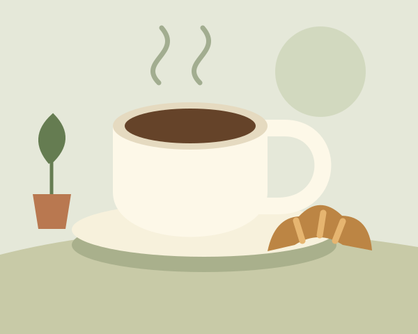

Completa las pruebas, carga las capturas y revisa las páginas antes de guardar el PDF. Los textos subrayados se pueden editar.
Ingeniería Web
Desarrollo de una interfaz web responsiva
Café de Barrio

Daniel Romero
2026
Documentación del proyecto
Daniel Romero · Ingeniería Web · Café de Barrio
1. Descripción del proyecto
Introducción
Café de Barrio es una página para una cafetería ficticia. La propuesta reúne una presentación breve, una carta de productos y un formulario de contacto de prueba. Se eligió este escenario porque permite organizar información cotidiana y trabajar una distribución que cambie según el tamaño de la pantalla.
Objetivo de la interfaz
Diseñar una interfaz clara que permita consultar la carta y recorrer las secciones desde un computador, una tableta o un teléfono, sin tener que crear una página diferente para cada dispositivo.
Estructura HTML5
Encabezado y navegación
La etiqueta header contiene la marca y el menú. Dentro de nav están los enlaces a Inicio, La carta, Nosotros y Escríbenos. Cada enlace apunta al identificador de su sección.
Contenido principal
main agrupa el contenido. Las etiquetas section separan las cuatro partes de la página y cada una tiene un título. El inicio incluye una figura con su descripción; cada producto de la carta está dentro de article.
Formulario y pie de página
El formulario usa label, input, textarea y button. Las etiquetas se relacionan con sus campos mediante for e id. El footer presenta el nombre del proyecto, el estudiante y un enlace para volver al inicio.
Estilos CSS3
Los estilos están en css/estilos.css. Se usaron tonos crema y verde, una tipografía con serifas para los títulos y Arial para el texto. Las variables de CSS reúnen los colores principales. Las imágenes son ilustraciones SVG locales y tienen texto alternativo. No se usan fuentes descargadas ni librerías externas.
Daniel Romero · Ingeniería Web · Café de Barrio
2. Diseño e interacción
La hoja de estilos parte de una sola columna, siguiendo el enfoque Mobile First. CSS Grid organiza los productos y divide las secciones amplias. Flexbox distribuye el encabezado, los enlaces, los filtros y el pie de página. Las Media Queries agregan columnas cuando hay espacio suficiente.
Ancho de la página
Distribución
Menos de 600 px
Una columna; menú desplegable.
De 600 a 899 px
Dos columnas en la carta; menú desplegable.
Desde 900 px
Tres columnas en la carta; menú completo y portada en dos columnas.
El contenedor ocupa el 90 % del ancho y tiene un máximo de 1120 px. Las imágenes usan max-width: 100 % y height: auto. Los títulos ajustan su tamaño con clamp(). Los filtros pueden pasar a otra línea y los campos no tienen un ancho fijo. Estas reglas buscan evitar que el contenido se salga de la pantalla.
Menú adaptable
Un botón muestra u oculta los enlaces en pantallas de menos de 900 px. aria-expanded informa su estado. Al elegir una sección o pulsar Escape, el menú se cierra.
Filtros de la carta
Los botones Todo, Bebidas y Panadería muestran los artículos de la categoría seleccionada. JavaScript usa atributos data y la propiedad hidden; aria-pressed identifica el filtro activo.
Formulario de prueba
Los campos son obligatorios. El correo usa type="email" y el mensaje requiere al menos diez caracteres. JavaScript revisa el nombre y el mensaje sin espacios sobrantes. Si los datos son válidos, aparece una confirmación. No existe un servidor: el formulario no envía ni almacena información.
Daniel Romero · Ingeniería Web · Café de Barrio
3. Pruebas de funcionamiento
Fecha de revisión: Por completar
Navegador utilizado: Por completar
Registrar los resultados después de revisar la página en el navegador.
Prueba
Qué revisar
Resultado
Computador · 1366 × 900
Revisar menú horizontal, portada en dos columnas y carta en tres columnas.
Tableta · 768 × 1024
Revisar menú desplegable y carta en dos columnas.
Celular · 390 × 844
Revisar una columna, lectura, imágenes y ausencia de desplazamiento horizontal.
Interacciones
Probar categorías, enlaces, menú y formulario vacío, con correo inválido y con datos válidos.
Observaciones
Por completar después de probar la página: indicar si hubo elementos fuera de pantalla, si el menú y los filtros funcionaron y si se corrigió algún problema.
Alcance
El formulario funciona como demostración local. La validación de campos no significa que el mensaje se haya enviado. Las capturas muestran resoluciones de navegador y no acreditan pruebas en equipos físicos diferentes.
Daniel Romero · Ingeniería Web · Café de Barrio
Evidencia: Computador
Resolución prevista: 1366 × 900 píxeles CSS.
Portada en dos columnas y menú horizontal. Revisar también la carta de tres columnas.
Captura pendiente. Seleccionar una imagen o generar el archivo evidencias/computador.png.
Observación: Por completar después de revisar esta resolución.
Daniel Romero · Ingeniería Web · Café de Barrio
Evidencia: Tableta
Resolución prevista: 768 × 1024 píxeles CSS.
Contenido principal apilado, menú adaptable y carta de dos columnas.
Captura pendiente. Seleccionar una imagen o generar el archivo evidencias/tableta.png.
Observación: Por completar después de revisar esta resolución.
Daniel Romero · Ingeniería Web · Café de Barrio
Evidencia: Teléfono móvil
Resolución prevista: 390 × 844 píxeles CSS.
Contenido en una columna y menú desplegable. Revisar que no exista desplazamiento horizontal.
Captura pendiente. Seleccionar una imagen o generar el archivo evidencias/movil.png.
Observación: Por completar después de revisar esta resolución.
Daniel Romero · Ingeniería Web · Café de Barrio
4. Conclusiones y referencia
La propuesta concentra el contenido en una sola página y cambia su distribución con dos puntos de adaptación. Grid permite ajustar las columnas de la carta y Flexbox ayuda a distribuir los controles. La separación de HTML, CSS y JavaScript facilita ubicar la estructura, la apariencia y las interacciones. La validación final en las tres resoluciones queda pendiente antes de la entrega.
Referencia
Guía de la actividad: Desarrollo de una interfaz web responsiva, documento proporcionado en el aula. Se tomó como referencia la lista de requisitos y entregables. Los textos del negocio y las ilustraciones SVG se prepararon para este proyecto; la cafetería y los precios son ficticios.
Video de funcionamiento
Pendiente de grabar. Añadir aquí el nombre del archivo de video o su enlace de acceso.